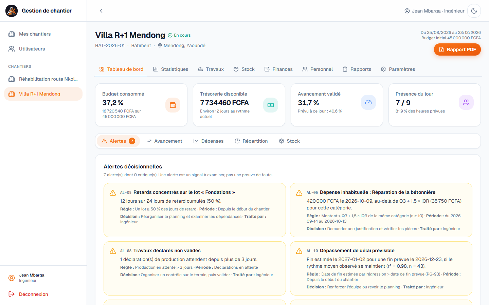
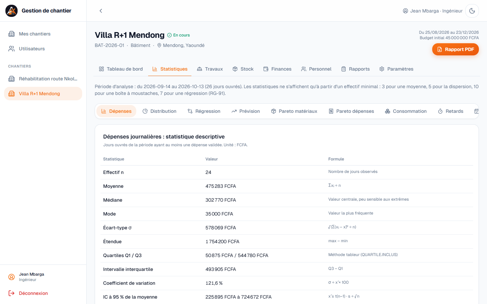
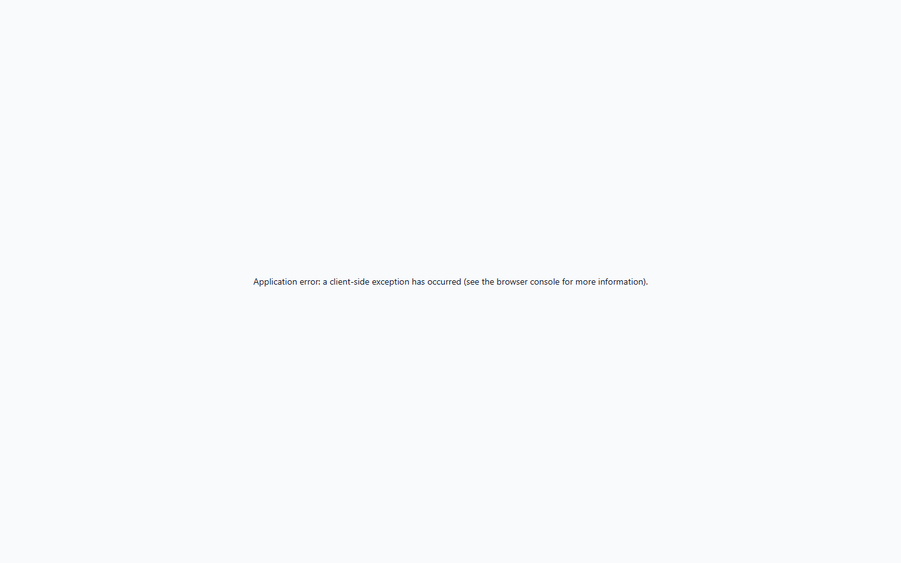
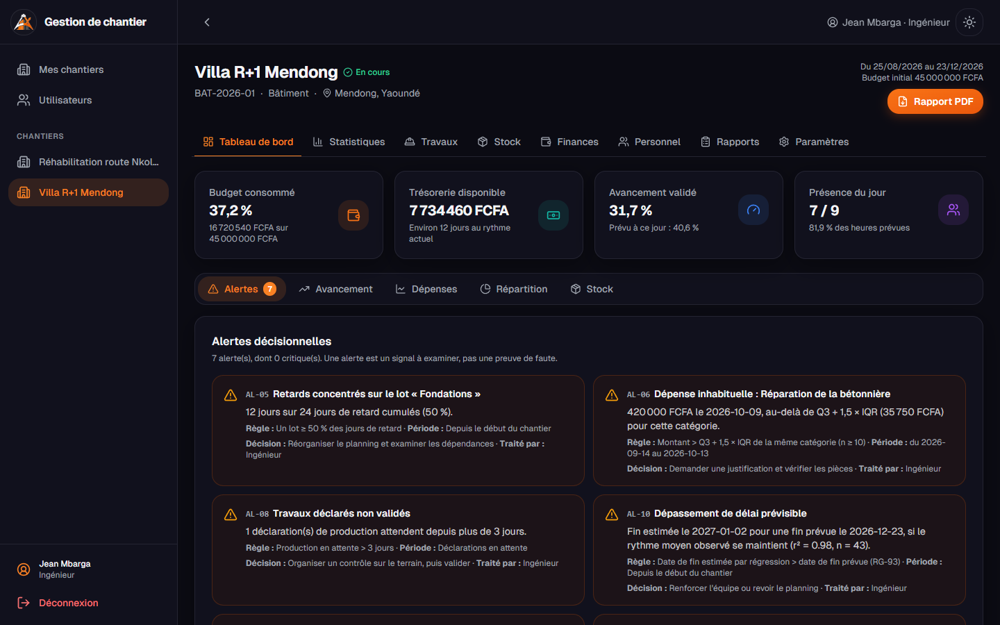
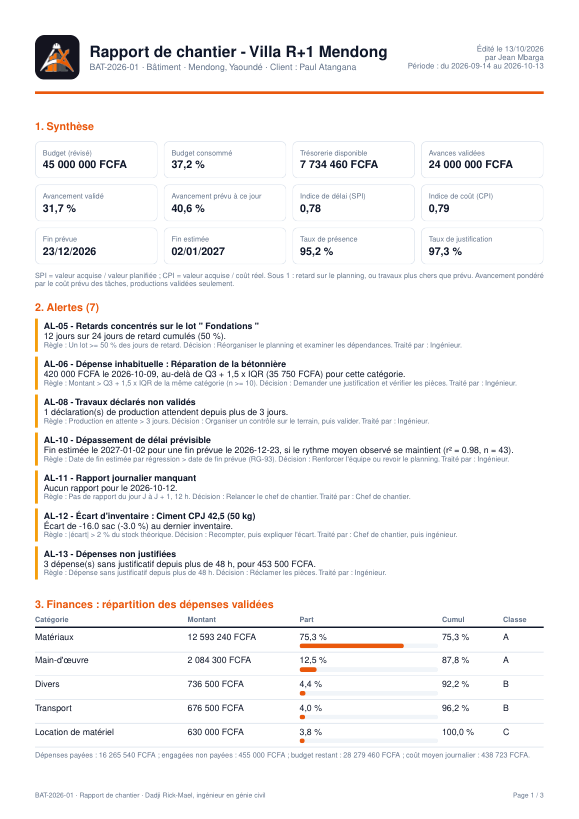

Suivi des matériaux, des finances, des travaux et du personnel,
indicateurs statistiques et aide à la décision
| Application en ligne | https://dadji.vercel.app |
| Code source | github.com/Dominique-BRIA/gestion-chantier-dadji |
| Présenté par | ........................................................ |
| Enseignant | ........................................................ |
| Date | Octobre 2026 |
Sur un chantier, l'argent, les matériaux, les travaux et les heures de travail sont suivis séparément, souvent sur papier. L'ingénieur découvre trop tard qu'un matériau va manquer, que le budget avance plus vite que les travaux, ou qu'une dépense n'a pas de justificatif.
Ce projet réalise un système d'information de pilotage de chantier : une application web qui collecte les observations du terrain, les conserve avec leur historique, calcule des indicateurs statistiques et signale les écarts qui demandent une décision.
Le travail a suivi les six étapes du cahier de conception : définition du périmètre, rédaction des règles de gestion, modélisation des données, conception des interfaces, test des calculs sur un jeu de données vérifié à la main, puis développement progressif et déploiement.
| Décision de périmètre | Choix retenu |
|---|---|
| Type de chantier | Choisi par l'ingénieur à la création : bâtiment, route, ouvrage d'art, assainissement/VRD, autre |
| Plateforme | Application web, utilisable sur ordinateur et téléphone |
| Organisation | Un ingénieur gère plusieurs chantiers ; chaque chantier a son propre client |
| Matériaux | Enregistrés par l'ingénieur pour chaque chantier ; pas de transfert entre chantiers |
| Jours ouvrés | Du lundi au dimanche ; le chef de chantier peut déclarer un jour de repos par semaine |
| Inventaire | Chaque semaine, pour chaque matériau |
| Objet | Ingénieur | Client | Chef de chantier | Manœuvre |
|---|---|---|---|---|
| Chantier | Créer, modifier, clôturer | Lire | Lire | Lire |
| Mouvements de stock | Créer, lire, corriger | Lire | Créer, lire | — |
| Dépenses | Créer, valider, payer | Lire les validées | Créer, lire | — |
| Avances | Saisir, confirmer | Déclarer, lire | — | — |
| Productions | Valider | Lire les validées | Déclarer | Signaler une fin de tâche |
| Présences | Lire, corriger | Taux global seulement | Saisir | Pointer, lire les siennes |
| Statistiques et alertes | Tout | Son chantier, sans données individuelles | Tableau de bord | — |
| Rapport PDF | Oui | Oui | — | — |
Chaque droit est contrôlé par le serveur, et pas seulement masqué dans l'interface : une requête hors périmètre reçoit une page « introuvable », sans révéler l'existence du chantier.
| Module | Contenu |
|---|---|
| Chantiers | Identité, type, budget, dates, cycle de vie (préparation, en cours, suspendu, terminé), avenants au budget |
| Matériaux et stock | Entrées, sorties, pertes, retours fournisseur, corrections, inventaires hebdomadaires |
| Finances | Avances du client, dépenses engagées et payées, justificatifs scannés |
| Tâches et avancement | Lots, tâches, quantités prévues, production journalière, validation, retards et causes |
| Personnel | Affectations, présences, heures supplémentaires, jours de repos |
| Statistiques | Tableau de bord, statistique descriptive, régression, prévision, Pareto |
| Contrôle et validation | Validation des dépenses, avances, productions, inventaires et rapports |
| Alertes | Quinze alertes avec leur règle, leur période et la décision suggérée |
| Rapports et historique | Rapports journaliers, signalements, journal d'audit, rapport de chantier en PDF |
Le modèle compte 17 tables. Toute observation porte une date, pour alimenter les séries chronologiques.
| Entité | Informations principales |
|---|---|
| Utilisateur | Identité, téléphone (identifiant), rôle, métier, taux journalier, état actif |
| Chantier | Code, nom, type, localisation, budget initial, dates prévues et réelles, statut, seuils |
| Avenant | Nouveau budget, motif, date, auteur |
| Affectation | Utilisateur, chantier, fonction, période |
| Tache | Lot, désignation, unité, quantité et coût prévus, dates prévues et réelles, cause de retard |
| Production | Tâche, date, quantité réalisée, heures, effectif, statut de validation |
| Materiau | Désignation, unité, catégorie, prix de référence, délai de livraison, seuil d'alerte |
| MouvementStock | Type, quantité, prix unitaire, date, tâche consommatrice, mouvement corrigé |
| Inventaire | Stock théorique, stock physique, date, validation |
| Avance | Montant, date, mode de paiement, référence, statut |
| Depense | Catégorie, montant, date, justificatif, fichier, statut, date de paiement, mouvement lié |
| Presence | Ouvrier, date, statut, heures prévues et réalisées, confirmation |
| JourRepos | Chantier, date (un par semaine) |
| RapportJournalier | Date, météo, travaux, incidents, observations, statut |
| Signalement | Type, description, statut, réponse |
| Validation | Objet, décision, responsable, date, commentaire |
| JournalAudit | Auteur, action, objet, ancienne et nouvelle valeur, date |
Le document docs/REGLES-DE-GESTION.md du dépôt détaille 94 règles numérotées (RG-01 à RG-94). Le code cite le numéro de la règle qu'il applique. Les règles essentielles :
| Règle | Contenu |
|---|---|
| RG-22 | Une sortie, une perte ou un retour ne peut pas dépasser le stock théorique. |
| RG-23 | Une entrée de stock achetée crée automatiquement la dépense correspondante : finances et stock sont rapprochés. |
| RG-24 | Un mouvement erroné se corrige par une opération opposée, le jour même par son auteur, ensuite par l'ingénieur. |
| RG-25 | Inventaire hebdomadaire ; sa validation aligne le stock théorique par une correction tracée. |
| RG-30 | Le client déclare son avance ; l'ingénieur confirme la réception. Seule une avance validée entre dans la trésorerie. |
| RG-41 | Une dépense sous le seuil du chantier (250 000 FCFA par défaut) est validée automatiquement ; au-delà, l'ingénieur décide. |
| RG-43 | Budget consommé = dépenses validées ; trésorerie = avances validées − dépenses payées. |
| RG-53 | Seules les productions validées comptent dans l'avancement. |
| RG-55 | L'avancement global est pondéré par le coût prévu des tâches ; une tâche finie en retard exige sa cause. |
| RG-63 | Tous les jours sont ouvrés ; un jour de repos par semaine peut être déclaré à l'avance. |
| RG-80 | Une saisie du jour J est modifiable jusqu'au lendemain ; au-delà, seul l'ingénieur corrige. |
| RG-91 | Effectifs minimaux : 3 pour une moyenne, 5 pour la dispersion, 10 pour une boîte à moustaches, 7 pour une régression. |
Toutes les formules sont écrites dans lib/stats.ts (statistique générale) et lib/indicateurs.ts (indicateurs du chantier). Chaque indicateur affiche sa période, son unité et son effectif n. Une division par zéro affiche « non calculable », jamais 0.
| Mesure | Formule | Usage dans l'application |
|---|---|---|
| Moyenne | x̄ = Σxᵢ / n | Dépense journalière, consommation journalière |
| Moyenne pondérée | Σ(xᵢ·wᵢ) / Σwᵢ | Avancement global pondéré par le coût des tâches |
| Médiane | Quantile d'ordre 0,5 | Niveau central, peu sensible aux journées extrêmes |
| Mode | Valeur la plus fréquente | Montant de dépense récurrent |
| Mesure | Formule | Usage |
|---|---|---|
| Variance, écart-type | σ² = Σ(xᵢ − x̄)² / n | Description de la période observée (divisée par n − 1 pour estimer) |
| Étendue | max − min | Amplitude des dépenses |
| Quartiles, IQR | Interpolation linéaire ; IQR = Q3 − Q1 | Même méthode que QUARTILE.INCLUS du tableur |
| Coefficient de variation | CV = σ / x̄ × 100 | < 15 % homogène ; 15 à 30 % modéré ; > 30 % irrégulier |
| Boîte à moustaches | Atypique si x < Q1 − 1,5·IQR ou x > Q3 + 1,5·IQR | Journées et dépenses atypiques (règle de Tukey) |
| Histogramme | k = 1 + log₂(n) classes (Sturges) | Distribution des dépenses journalières |
| Méthode | Formule | Usage |
|---|---|---|
| Intervalle de confiance à 95 % | x̄ ± t(n−1) · s / √n | Précision de la dépense journalière moyenne (loi de Student) |
| Corrélation de Pearson | r = cov(x, y) / (σx · σy) | Effectif et productivité horaire |
| Régression linéaire | a = cov(x, y) / var(x) ; b = ȳ − a·x̄ | Heures et quantité produite ; avancement et temps |
| Coefficient de détermination | r² | Part de la variation expliquée |
| Moyenne mobile | Moyenne des 7 derniers jours | Tendance des dépenses |
| Prévision de fin | Jour où a·t + b atteint 100 % | Donnée seulement si n ≥ 10 et r² ≥ 0,8 |
| Indicateur | Formule | Usage |
|---|---|---|
| Pareto et classes ABC | Tri décroissant, cumul ; A jusqu'à 80 %, B jusqu'à 95 % | Postes de dépense et matériaux les plus coûteux |
| Autonomie du stock | stock / consommation moyenne (10 jours) | Date de commande (comparée au délai de livraison) |
| Taux de perte | pertes / quantités reçues × 100 | Qualité du stockage |
| Prix moyen pondéré | Σ(qté × prix) / Σ qté | Coût moyen des achats |
| Taux de présence | heures réalisées / heures prévues × 100 | Assiduité de l'équipe |
| Productivité horaire | quantité / heures travaillées | Comparée seulement entre tâches de même unité |
| Valeur acquise : SPI | valeur acquise / valeur planifiée | < 1 : en retard sur le planning |
| Valeur acquise : CPI | valeur acquise / coût réel | < 1 : les travaux coûtent plus que prévu |
Chantier de bâtiment de 45 000 000 FCFA, prévu du 25/08/2026 au 23/12/2026, observé au 13/10/2026 après 43 jours ouvrés. La période d'analyse statistique couvre les 30 derniers jours.
| Indicateur | Valeur | Lecture |
|---|---|---|
| Budget consommé | 37,2 % | 16,7 millions de FCFA de dépenses validées |
| Avancement validé / prévu | 31,7 % / 40,6 % | Le chantier a environ 9 points de retard sur le planning |
| SPI | 0,78 | 22 % de travaux en moins que prévu à cette date |
| CPI | 0,79 | Chaque franc dépensé produit 0,79 franc de travaux prévus ; s'explique en partie par le stock acheté d'avance |
| Trésorerie disponible | 7 734 460 FCFA | Environ 12 jours au rythme de dépense récent |
| Fin estimée | 02/01/2027 | Dix jours après la fin prévue |
| n | Moyenne | Médiane | Écart-type | Q1 | Q3 | CV | IC à 95 % |
|---|---|---|---|---|---|---|---|
| 24 | 475 283 | 302 770 | 578 069 | 50 875 | 544 780 | 121,6 % | 225 895 à 724 672 |
Interprétation. La moyenne (475 283 FCFA) dépasse nettement la médiane (302 770 FCFA) : la distribution est étirée vers la droite par quelques jours de gros achats et par la paie du samedi. Le coefficient de variation de 121,6 % classe la série comme très irrégulière ; la médiane décrit donc mieux une journée ordinaire que la moyenne. L'intervalle de confiance est large (de 226 000 à 725 000 FCFA) parce que la dispersion est forte et que n reste modeste. Trois journées dépassent la borne de Tukey (1 285 638 FCFA) : elles sont signalées pour examen, jamais retirées du calcul.
Avancement en fonction du temps : avancement = 0,84 × jour − 2,73, avec r² = 0,983 sur n = 43 jours. Le rythme est très régulier (0,84 point d'avancement par jour ouvré) et la droite explique 98 % de la variation : la prévision de fin au 02/01/2027 est jugée fiable, sous l'hypothèse que ce rythme se maintient.
Heures travaillées et quantité produite (tâche « Semelles et longrines en béton armé ») : y = 0,007 x + 1,31, r = 0,423, r² = 0,179, n = 20. Les heures n'expliquent que 18 % de la variation de la production : d'autres facteurs pèsent davantage (approvisionnement, météo, nature du travail).
Effectif et productivité horaire : r = −0,821. Plus l'équipe est nombreuse sur la tâche, plus la production par heure baisse. C'est une association, pas une preuve de cause à effet ; elle suggère toutefois d'examiner l'organisation des équipes nombreuses.
| Catégorie | Part | Cumul | Classe |
|---|---|---|---|
| Matériaux | 75,3 % | 75,3 % | A |
| Main-d'œuvre | 12,5 % | 87,8 % | A |
| Divers | 4,4 % | 92,2 % | B |
| Transport | 4,0 % | 96,2 % | B |
| Location de matériel | 3,8 % | 100 % | C |
Deux postes concentrent près de 88 % des dépenses : c'est sur les achats de matériaux et l'organisation de la main-d'œuvre que les économies sont possibles.
| Matériau | Stock | Autonomie | Perte | Prix moyen pondéré | Hausse du prix |
|---|---|---|---|---|---|
| Ciment CPJ 42,5 | 527 sacs | 46,2 j | 0,1 % | 5 651 FCFA | 3,9 % |
| Sable | 33,5 m³ | 35,8 j | 0,3 % | 12 255 FCFA | 3,6 % |
| Gravier 15/25 | 20,7 m³ | 23,6 j | 0,2 % | 18 678 FCFA | 7,1 % |
| Fer HA 10 | 226 barres | 20,7 j | 0,3 % | 4 965 FCFA | 5,3 % |
| Parpaing de 15 | 2 403 | 11,8 j | 0,0 % | 475 FCFA | 7,8 % |
Le stock de ciment couvre 46 jours : une partie du budget est immobilisée en stock, ce qui explique le CPI inférieur à 1 sans qu'il y ait gaspillage. Le parpaing, avec 12 jours d'autonomie, sera le prochain matériau à commander.
Taux de présence de 95,2 % (écart-type de 6,2 points entre les jours), 51,9 heures supplémentaires sur la période. Le coût théorique de la main-d'œuvre (2 186 300 FCFA, calculé à partir des présences) est proche du coût payé (2 084 300 FCFA) : l'écart de 4,7 % correspond à la paie de la semaine en cours, pas encore versée.
Quinze alertes traduisent les situations du cahier de conception en règles chiffrées. Chaque alerte affiche la règle déclenchée, la période étudiée, la décision suggérée et la personne habilitée à la traiter. Une alerte est un signal à examiner, jamais une preuve de faute.
| Code | Situation | Règle de déclenchement |
|---|---|---|
| AL-01 | Rupture de stock prévisible | Autonomie < seuil d'alerte ; critique si < délai de livraison |
| AL-02 | Pertes en hausse | Taux de perte sur 14 jours > 5 % et en hausse |
| AL-03 | Dépenses plus rapides que les travaux | Budget consommé − avancement > 10 points |
| AL-04 | Rendement en baisse | Productivité en baisse 3 jours de suite |
| AL-05 | Retards concentrés | Un lot porte au moins 50 % des jours de retard |
| AL-06 | Dépense inhabituelle | Montant > Q3 + 1,5 × IQR de sa catégorie (n ≥ 10) |
| AL-07 | Trésorerie insuffisante | Moins de 7 jours de dépenses couverts |
| AL-08 | Travaux non validés | Production en attente depuis plus de 3 jours |
| AL-09 | Budget presque épuisé | Budget consommé ≥ 90 % |
| AL-10 | Dépassement de délai prévisible | Fin estimée par régression après la fin prévue |
| AL-11 | Rapport manquant | Pas de rapport journalier la veille |
| AL-12 | Écart d'inventaire | |écart| > 2 % du stock théorique |
| AL-13 | Dépense non justifiée | Sans justificatif depuis plus de 48 heures |
| AL-14 | Présence faible | Taux de présence du jour < 80 % |
| AL-15 | Inventaire en retard | Plus de 7 jours sans inventaire validé |
| Code | Constat | Décision suggérée |
|---|---|---|
| AL-05 | Le lot Fondations porte 12 des 24 jours de retard (50 %) | Réorganiser le planning, examiner les dépendances |
| AL-06 | Réparation de bétonnière : 420 000 FCFA, au-delà de la borne de Tukey de sa catégorie (35 750 FCFA) | Demander une justification |
| AL-08 | Une déclaration de production attend depuis plus de 3 jours | Contrôler sur le terrain, puis valider |
| AL-10 | Fin estimée au 02/01/2027 pour une fin prévue au 23/12/2026 | Renforcer l'équipe ou revoir le planning |
| AL-11 | Aucun rapport journalier pour la veille | Relancer le chef de chantier |
| AL-12 | Écart d'inventaire de 3 % sur le ciment | Recompter, puis expliquer l'écart |
| AL-13 | 3 dépenses sans justificatif (453 500 FCFA) | Réclamer les pièces |
Les seuils (5 %, 10 points, 7 jours, 2 %, 80 %…) sont des valeurs par défaut : l'ingénieur peut les ajuster pour chaque chantier dans l'onglet Paramètres.
| Couche | Technologie |
|---|---|
| Application web | Next.js 14 (React 18, TypeScript), pages rendues côté serveur, actions serveur pour les saisies |
| Interface | Tailwind CSS, composants shadcn, icônes lucide, graphiques recharts, mode clair et sombre |
| Données | PostgreSQL avec l'ORM Prisma ; base hébergée sur Neon |
| Fichiers | Justificatifs (photos, PDF) sur Backblaze B2, compartiment privé, liens temporaires de 10 minutes |
| Hébergement | Vercel, déploiement automatique à chaque envoi sur GitHub |
| Rapport PDF | @react-pdf/renderer, généré à la demande par le serveur |
| Sécurité | Mots de passe hachés (scrypt), session signée HMAC-SHA256, contrôle des droits sur chaque page et chaque action |
| Fichier | Rôle |
|---|---|
prisma/schema.prisma | Modèle des données |
lib/stats.ts | Fonctions statistiques pures |
lib/indicateurs.ts | Indicateurs du chantier et alertes |
app/actions.ts | Toutes les saisies, avec les règles de gestion |
lib/rapport-pdf.tsx | Rapport de chantier en PDF |
prisma/seed.ts | Simulation des deux chantiers de démonstration |
26 tests automatiques (outil Vitest) vérifient les formules. La série de référence 2, 4, 4, 4, 5, 5, 7, 9 donne des valeurs connues : moyenne 5, écart-type 2, médiane 4,5, Q1 4, Q3 5,5, CV 40 %, marge de l'intervalle de confiance 1,788. La régression sur x = 1…5, y = 2, 4, 5, 4, 5 donne a = 0,6, b = 2,2 et r² = 0,6.
Un petit chantier fictif est calculé à la main, puis comparé au résultat de l'application : budget consommé 30 %, trésorerie 400 000 FCFA, avancement pondéré 70 %, SPI 1, stock 84 sacs, prix moyen pondéré 1 100 FCFA, autonomie 7 jours, taux de présence 75 %, et exactement quatre alertes attendues.
Le projet livre un système d'information complet et en ligne, qui relie les opérations quotidiennes du chantier aux indicateurs statistiques, puis aux décisions. Chaque chiffre affiché indique sa période, son unité et son effectif ; chaque alerte explique sa règle ; chaque donnée garde la trace de son auteur et de sa validation.
L'étude de cas montre l'intérêt de la démarche statistique : la médiane corrige la vision donnée par une moyenne tirée par quelques gros achats ; la régression de l'avancement fournit une date de fin crédible (r² = 0,98) ; le Pareto désigne les deux postes qui concentrent 88 % des dépenses ; et le croisement du budget, du stock et de l'avancement évite de conclure trop vite à un dépassement, puisqu'une partie des dépenses dort en stock.




